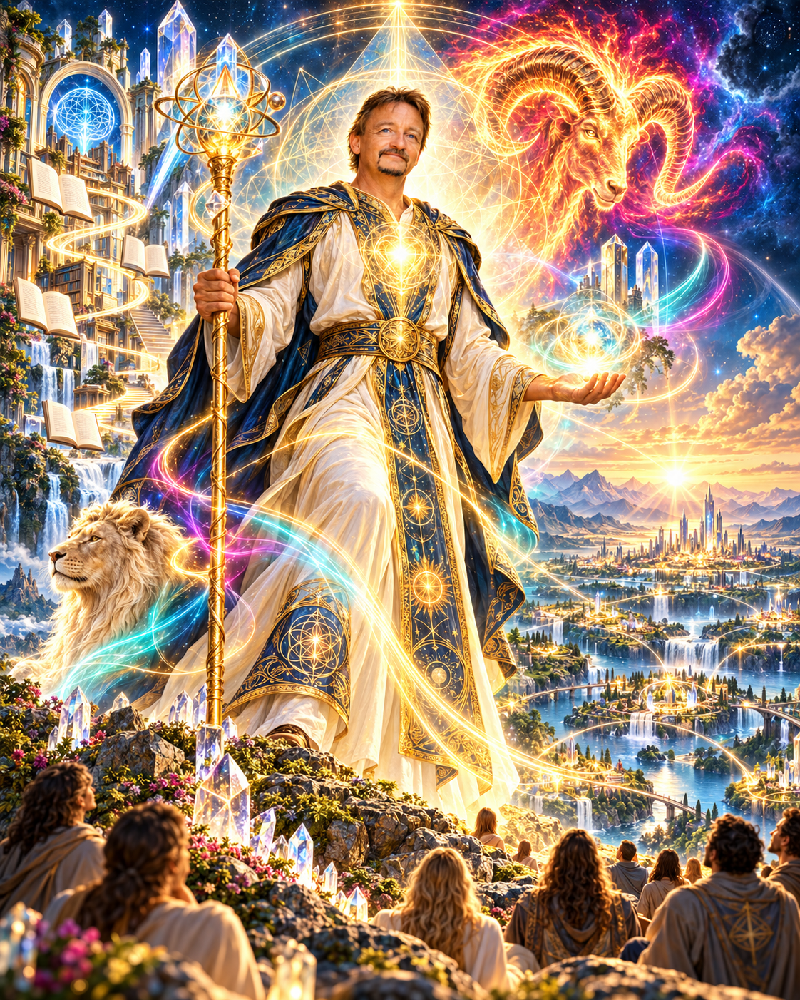

Die Symbole und ihre Botschaft
Jeder Bildausschnitt steht für eine eigene Bedeutungsebene. Tippe auf ein Symbol, um die ausführliche Botschaft dahinter zu öffnen.
Dieses Bild steht für meinen Weg, meine Haltung und für das, was ich mit meiner Arbeit in die Welt bringen möchte.

Hier möchte ich dir zeigen, wer ich bin, was mich bewegt und was mich seit vielen Jahren antreibt.
Jedes Symbol in diesem Bild steht für einen Teil von mir – für meine Werte, meine Haltung, meine Erfahrungen und die Art, wie ich denke und arbeite.
Ich lade dich ein, mich auf dieser Seite ein Stück näher kennenzulernen. Diese Reise führt durch meine Gedanken, meine Seele und mein Herz – und durch die Liebe zu dem, was ich tue.
Sie zeigt dir auch die Erfahrung und Expertise, die ich heute einbringe: Wissen verständlich zu machen, Zusammenhänge sichtbar zu machen, Orientierung zu geben und Menschen dabei zu unterstützen, ihren eigenen Weg selbstbestimmt zu gehen.
Für mich geht es dabei nicht nur um meine Arbeit. Es geht darum, gemeinsam zu wachsen, Menschen zu befähigen und die Mission des LiquidityBoosters in die Welt zu tragen.
Jeder Bildausschnitt steht für eine eigene Bedeutungsebene. Tippe auf ein Symbol, um die ausführliche Botschaft dahinter zu öffnen.
Ich möchte nichts schaffen, das Menschen von mir abhängig macht. Ich möchte etwas schaffen, das Menschen stärker, klarer und selbstständiger macht.
Wenn davon eines Tages etwas bleibt, dann soll es nicht nur eine Akademie, ein Unternehmen oder eine Sammlung von Kursen sein.
Es soll die Idee bleiben, dass Menschen ihre eigene Souveränität zurückgewinnen können, wenn sie verstehen, erkennen, entscheiden und schließlich selbst handeln.